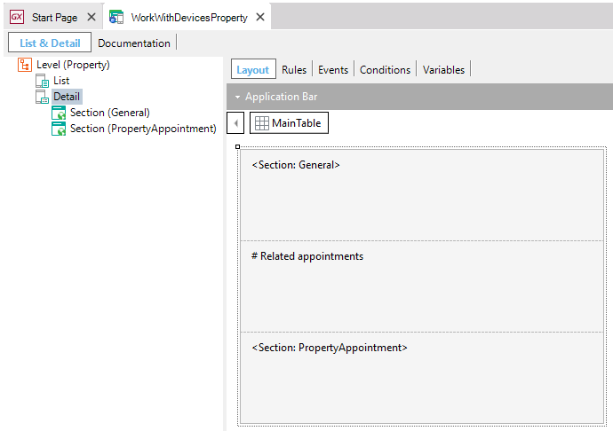
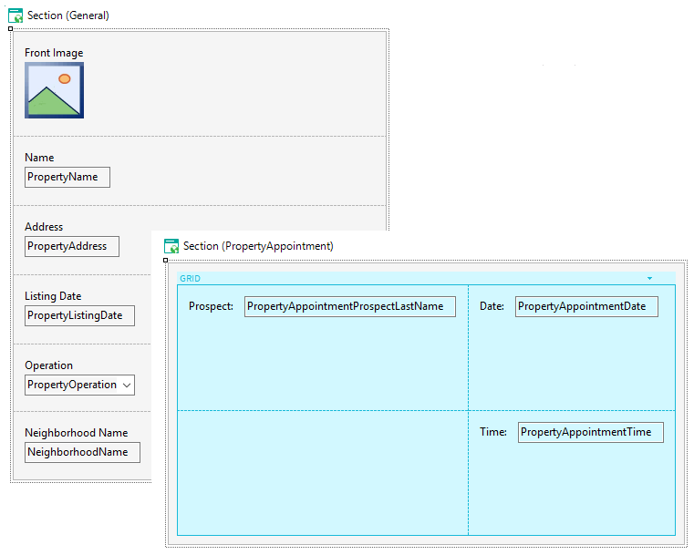

Work With for Smart Devices Detail Node
The Detail Node is what we see when selecting a record from the List to see more information on that record (Detail). For each Detail node defined in the Work With for Smart Devices Pattern instance, a window is generated to the right containing the following information: Work With and Panel for Smart Devices tabs  The Work With Pattern provides the concept of Section within a Detail, each Details has several Section. A Section is just a group that allows me to separate certain operations of the user interface within the detail. When using a Section, we must have a way to organize them within a Detail. To do so, in the Detail layout we can make reference to one or more sections.  In execution time (Android) the Detail with its Sections is shown as follow: See Also
Videos
|